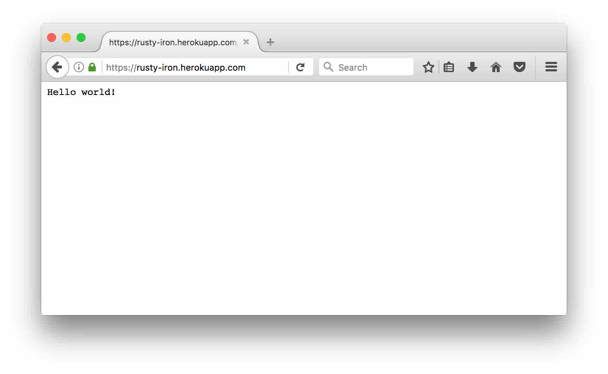
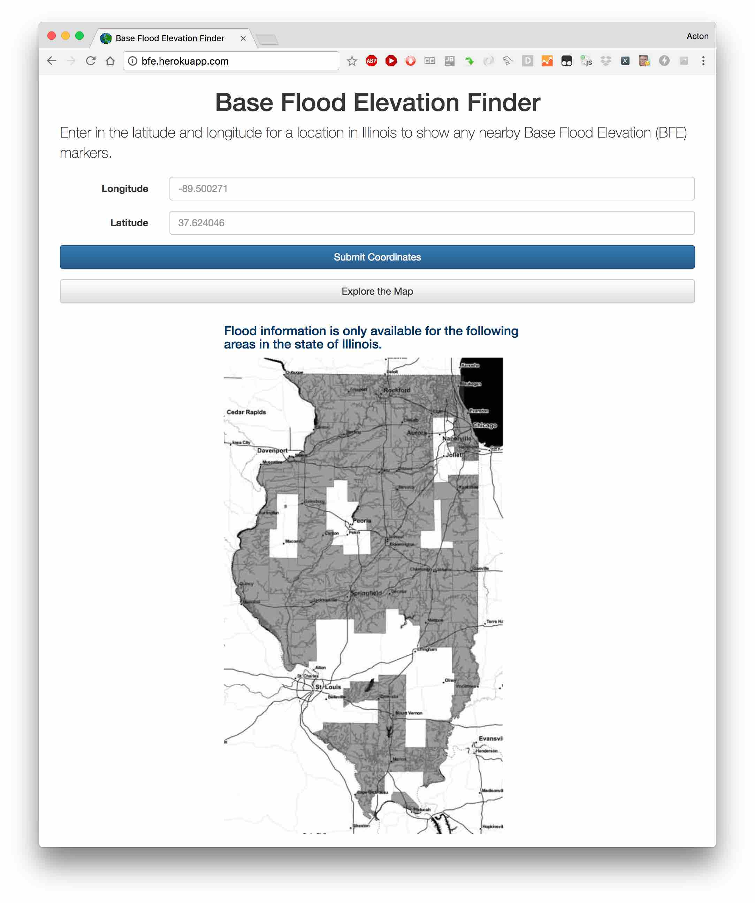
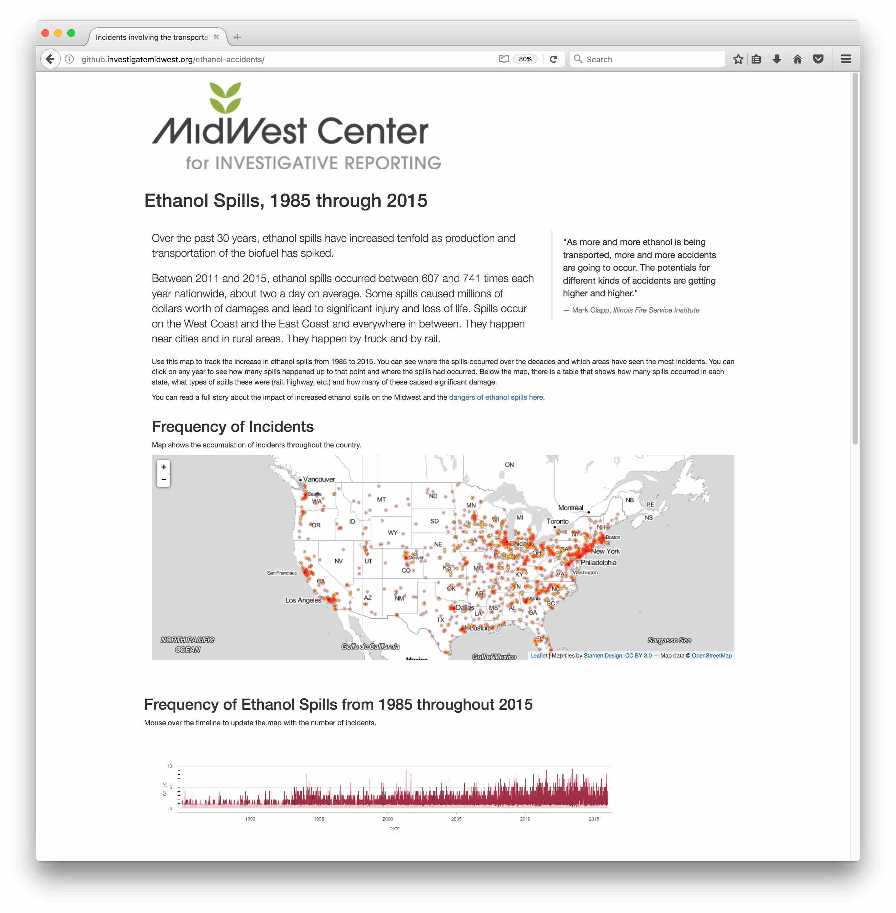
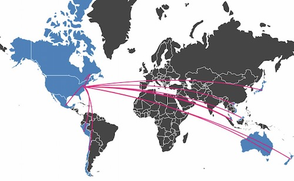

The Rusty Iron: Experimenting with Iron for Rust

Getting some hands on experience with the Rust Language and testing the Iron framework. Got it up and running on Heroku pretty easy.
"Hello World!"
Apparently this thing can handle about 70,000 requests per second... that's astonishing if true.
Need a use case for this. Was thinking of rebuilding my experimental Base Flood Elevation AR tool and integrating with the Argon browser.
Visualizing Tango Tablet Data with Mozilla A-Frame VR Platform

This is a experimental visualization built from data recorded during a guided tour using the Tango AR Tablet.
The blue squares represent the tango tablet, it's location within the environment, and the direction it's facing. This is time-series data captured at half-second intervals.
The white walls represent the layout of the environment, minus any furniture. While the tablet is drawn to scale, the walls are taller than scale.
The 3D model is rendered in the Firefox web browser and completely navigable.
The visualization uses Mozilla's A-Frame VR platform.
Click here to view the 3D model in your web browser.
Base Flood Elevation Mapping

This web application finds the nearest flood elevation marker in the state of Illinois using data released by the Department of Homeland Security.
The geospatial requests are made through a web front end, to a Node.JS server, and a Mongo database. The system is hosted on Heroku.
This is the backend prototype for an Augmented Reality front end built using Unity 3D and working on Android and iOS.
You can view the web portal by clicking here.
Visualizing the Frequency of Ethanol Spills

Using government data tracking chemical spills, the investigative reporting team looked into the increasing frequency of ethanol spills taking place throughout the United States in the past 20 years.
This visualization was challenging to optimize and required reducing the data payload as much as possible in order to have it load more quickly.
The graphics are built using a combination of javascript based data-visualization tools, including d3.js, leaflet.js, heatmaps.js, and metricsgraphics.js.
Admittedly the graphic doesn't load or update as quickly as I'd like, but it was a great exercise in optimizations and opportunity to use new tools to showcase the data in a more enriching and compelling way.
The graphic is available for viewing here. The full story is available for reading here.
Visualizing WTO Exports for Proposed Trans-Pacific Partnership (TPP)

This is an interactive graphic showing U.S. agricultural exports and imports with TPP trading partners.
It was built using Leaflet.js and d3.js, and is hosted on GitHub.
It is available here.
Property Record Search Database

Using the property records used through the investigative piece on homeowner’s exemptions, The Midwest Center for Investigative Reporting sponsored the build for a searchable database to accompany the story.
This application is built using Python and GeoDjango. Records and map points are served up from a PostgreSQL database and presented using leaflet.js. Search queries are handled by Elastic Search. The application is hosted on Heroku.com.
Click here to use the database.
Copyright © 2015 Powered by MWeb, Theme used GitHub CSS.